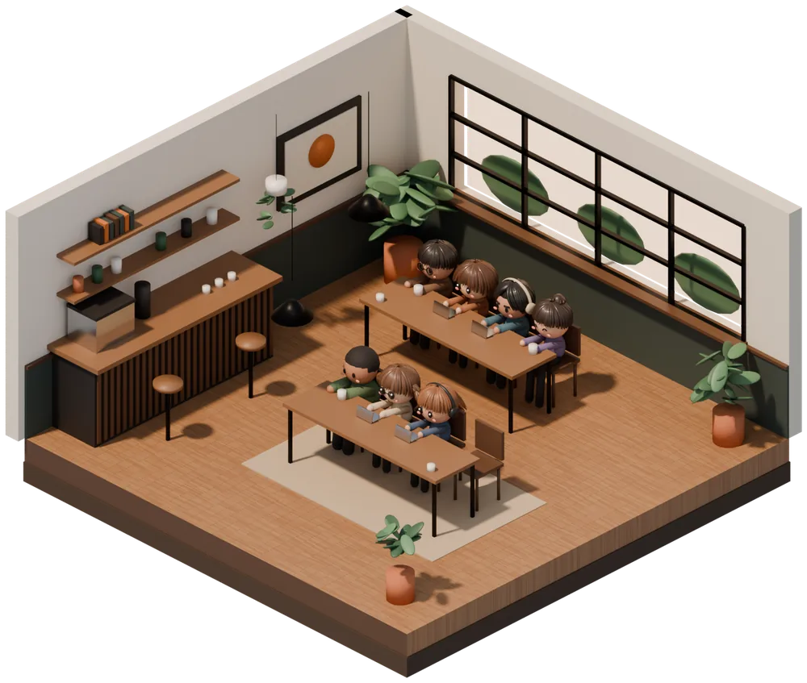
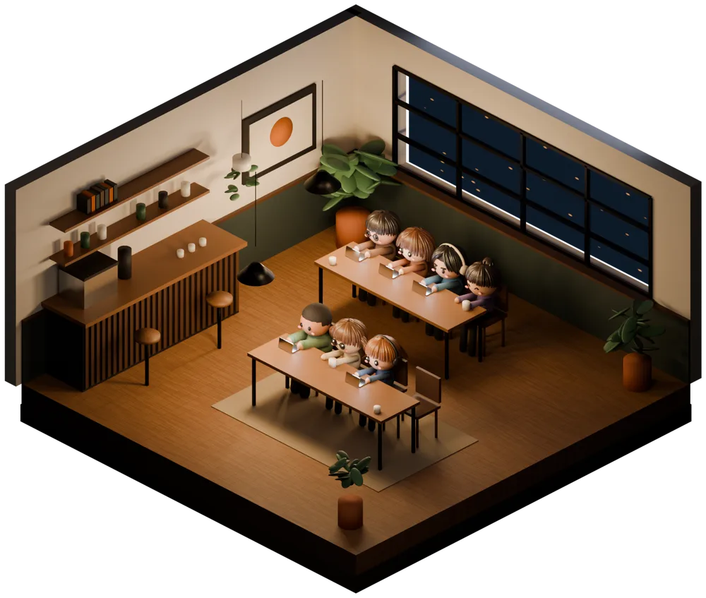
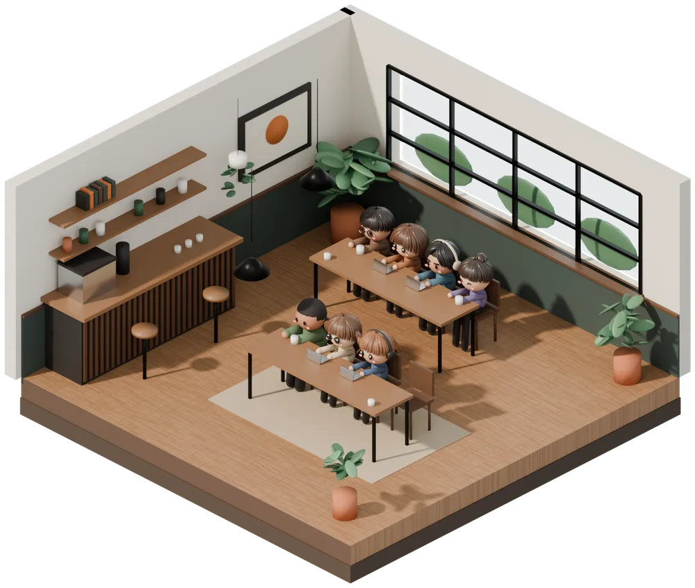
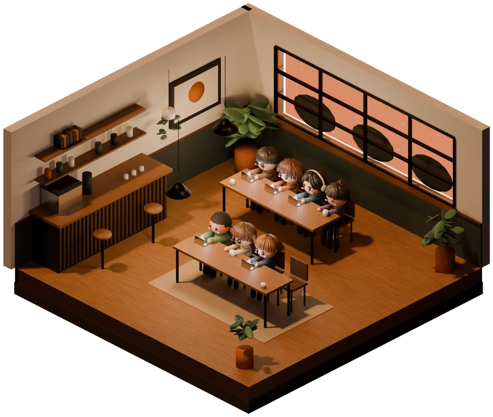
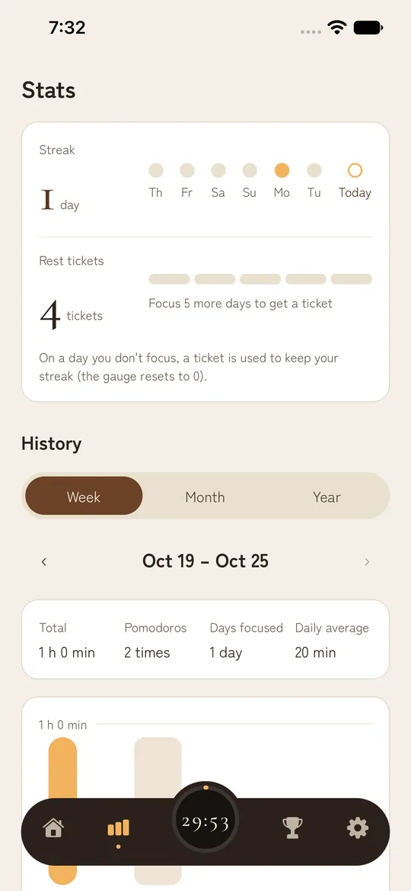
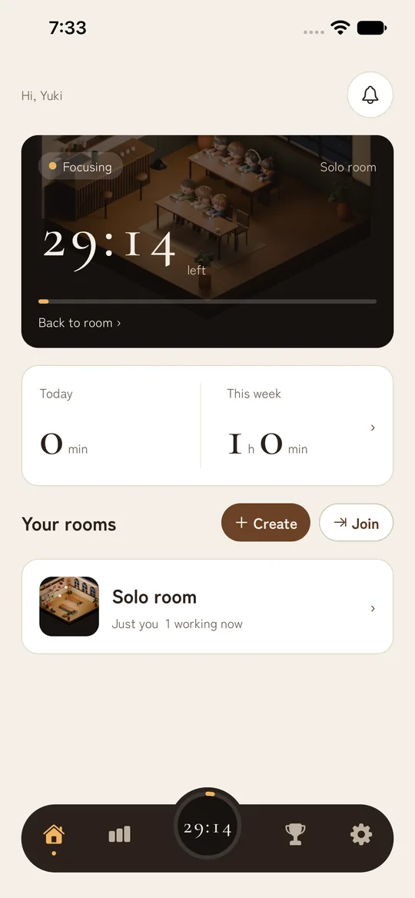

5:00–Morning
Soft morning light fills the cafe. For the first task of the day, or studying before you head out.
Pomodoro × Cafe
Focus Cafe is a Pomodoro timer app where you focus together with friends, surrounded by the sights and sounds of a cafe. Gather in an invite-only room with up to 20 people and work at your own pace, with no calls and no microphone.

Movie
What is Focus Cafe
Can't focus at home, but get a lot done at a cafe or library? Simply knowing that someone nearby is working hard helps you keep going.
Focus Cafe recreates that feeling in a cafe on your phone. When you enter a room, your avatar takes a seat in the cafe. You can see whether the others in the room are focusing or taking a break, and how many minutes they have left, so you can work hard together without saying a word.
Time is divided with the Pomodoro Technique: 25 minutes of focus, then a 5-minute break. You can change the length of both.
Morning, Day, Evening & Night
The light in the cafe changes through morning, day, evening, and night. Whenever you open the app, you work in the cafe of that hour. The color of the timer shows whether you are focusing or on a break.

Soft morning light fills the cafe. For the first task of the day, or studying before you head out.

Bright light pours in through the big windows. On breaks, send each other a quick "good work" in the chat.

The sun sets and the lamps come on. For one more push after work or school.
A lamp-lit cafe at night. While you focus, music plays and no chat or ads appear, so nothing interrupts your work.
Features
Room
When you enter a room, your avatar sits in an empty seat at one of two tables for four (8 seats). Everyone has their own timer, so you don't need to match anyone. Sit down whenever you like, and leave whenever you like.
Chat
The only way to talk is a text chat inside the room. Unlike a call, you don't have to worry about your voice or background noise, and you never show your face. You can't read or write in the chat while you focus, so you can catch up on messages during your break.

Streak
Finish one Pomodoro a day and your streak grows by a day. Every 5 days in a row, you get a rest ticket. On a day you can't focus, a ticket is used automatically so your streak continues.

Timer
The timer runs on its end time, so it stays accurate while you use other apps or turn off the screen. When focus time or a break ends, you get a notification with an alarm sound.
Avatar
The one sitting in the room is your avatar. Mix and match the face, hairstyle, hair color, body type, clothes, and accessories to make it your own. While you focus, it holds a laptop, a book, a sketchbook, and more. On a break, it enjoys coffee, a matcha latte, a cake set, and more.
How to start
It takes about a minute from installing the app to starting your first Pomodoro.
Sign in with your Google account (or your Apple account on iPhone). No email address or password to register.
On your own, go to your solo room. With friends, create a room and send the invite code, or join with a code you received.
Once you're seated, start the timer. Cafe music plays and your focus time begins.
When time is up, your break starts automatically. Catch your breath in the chat, then on to the next Pomodoro.
Compare
There are several ways to work alongside others. Focus Cafe aims for the space in between: easier on you than a call, and easier to keep up than a timer on your own.
| Focus Cafe | Work calls (Discord, etc.) | Online study sessions (Zoom, etc.) | A regular Pomodoro timer | |
|---|---|---|---|---|
| Voice and face | Not shown (text chat only) | You speak and listen (you can mute) | Cameras are often on | Not used |
| Feeling of being together | Avatars in seats and "Focus" or "Break" labels | Voices and sounds | Faces on screen | None (alone) |
| Time blocks | Everyone has their own Pomodoro timer | None (you bring your own timer) | Often follows the host | Yes |
| How to join | Come and go whenever you like | Join whenever you like | Join at the scheduled time | Anytime |
| Records | Focus time, streaks, and ranking | None in particular | None in particular | Depends on the app |
The other columns are examples of typical use. They vary by tool and group.
For you
For people who want to study surrounded by others working hard, like in a study hall. Your streak helps make studying a daily habit.
For people who slack off at home. Create a room with your coworkers or team, and feel like you're working together without being on a call.
For long solo work like drawing, writing, or programming. Share your progress with each other on breaks.
A place to keep promises like "meet every night at 9 for an hour." No voice needed, so you can use it late at night or with family around.
Pricing
The timer, rooms, chat, ranking, and streaks are free, always.
¥0Just sign up and use it for as long as you like
¥300 / monthor ¥2,400 a year (¥200 a month)
Prices are in Japanese yen as of October 2026. The actual price, in your local currency, is shown on the purchase screen in the store. You can cancel anytime in the store.
No ads appear while you focus. The only ads are ones you choose to watch when you want a rest ticket or a trial of a paid background.
FAQ
Yes. The timer, rooms, chat, ranking, and streaks are free. For people who want every background and music track, or records older than 30 days, there is a paid subscription, FocusCafe Plus (¥300 a month or ¥2,400 a year in Japan).
No. You can see how the others are doing from their avatars in the seats and the "Focus" and "Break" labels. The only way to talk is a text chat of up to 200 characters, so you can work without showing your voice or face.
Yes. When you sign up, you get your own solo room where you can use the Pomodoro timer. Your streak and records are kept the same way as when you focus with others.
No. Rooms are invite-only: only people who get the invite code from the room's creator can enter, and there is no list of public rooms. Each room can have up to 20 members, and 8 people can be seated at a time. You can report or block anyone who bothers you.
It is a time management method where you repeat 25 minutes of focus and a 5-minute break. Breaking work into short blocks makes it easier to get started and lets you rest before you get tired. Focus Cafe starts with 25 and 5 minutes, and you can set focus time from 5 to 90 minutes and breaks from 1 to 30 minutes.
No. The timer runs on its end time, so it stays accurate even when you close the app, and you get a notification when it ends. The timer and music keep going even if you leave the room screen.
When you are not focusing (during a break, or when your timer is not running). While you focus, you can neither read nor write messages, so you can stay on task. Messages disappear after 7 days.
They protect your streak. On a day you don't finish a single Pomodoro, a ticket is used automatically and your streak continues. You start with 5 tickets and get 1 more for every 5 days in a row that you focus (you can hold up to 10).
No ads appear on their own. The only ads are ones you choose to watch when you want a rest ticket or a 24-hour trial of a paid background. Ads are never shown while you focus.
Yes. The app is available in English and Japanese, and follows your device language.
Yes. The iPhone version (iOS 16.4 or later) is on the App Store, and the Android version (Android 8.0 or later) is on Google Play.
Go to Settings, then Delete account in the app. To ask us to delete it without using the app, see Account and data deletion.
Free to install. Your solo room is ready right away.
Focus CafeAndroid · Free to use
Focus CafeiPhone · Free to use
Get it on Google Play Download on the App Store